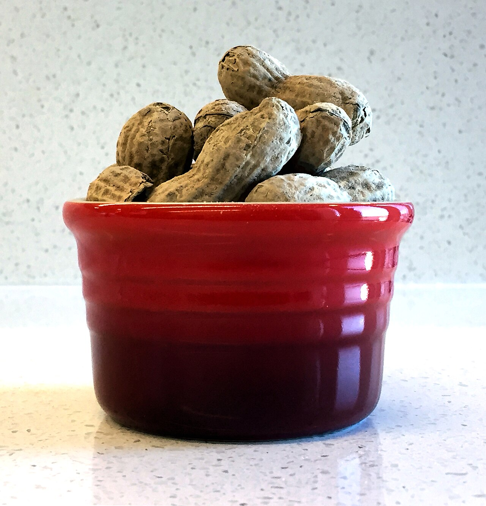

细胞中的元素和化合物
本期导读
从元素的种类和含量认识生物界与非生物界的统一性和差异性，记准大量元素与微量元素，掌握还原糖、脂肪、蛋白质三个检测实验的试剂、条件与颜色。
元素 · 化合物 · 有机物的检测

视频原话 · 导读3 句
- 同学们好！这节课梳理人教版必修一第二章第一节——细胞中的元素和化合物。7.8s
- 高考常考元素的种类和含量，以及还原糖、脂肪和蛋白质的检测实验。7.1s
- 我们按七个考点梳理，每个考点都讲清楚怎么考、怎么做。5.6s
统一性和差异性01#
组成细胞的化学元素，在无机自然界中都能找到，没有一种元素是细胞所特有的，这体现了生物界与非生物界的统一性。
但细胞中各种元素的相对含量与无机自然界大不相同，这体现了生物界与非生物界的差异性。
| 角度 | 依据 | 体现 |
|---|---|---|
| 元素种类 | 细胞中的元素在无机自然界中都能找到 | 统一性 |
| 元素含量 | 相对含量与无机自然界大不相同 | 差异性 |
视频原话4 句
- 考点一，生物界与非生物界的统一性和差异性。组成细胞的化学元素，在无机自然界中都能找到。9.7s
- 没有一种元素是细胞所特有的，这体现了生物界与非生物界的统一性。6.5s
- 但细胞中各种元素的相对含量与无机自然界大不相同，这体现了差异性。7.0s
- 解题方法：看元素种类说统一性，看元素含量说差异性。5.8s
大量与微量元素02#
大量元素有C、H、O、N、P、S、K、Ca、Mg。
微量元素有Fe、Mn、Zn、Cu、B、Mo，含量很少，但同样必不可少。微量元素可以用口诀记：“铁猛碰新木桶”——铁、锰、硼、锌、钼、铜。
视频原话4 句
- 考点二，大量元素和微量元素。大量元素有C、H、O、N、P、S、K、Ca、Mg。9.5s
- 微量元素有Fe、Mn、Zn、Cu、B、Mo，含量很少，但同样必不可少。7.2s
- 微量元素可以用口诀记：“铁猛碰新木桶”——铁、锰、硼、锌、钼、铜。7.2s
- 易错：大量、微量是按含量分的，不是按作用大小；Mg、Ca是大量元素，常被混进微量元素里。9.8s
核心元素与含量03#
生物大分子以碳链为基本骨架，所以说碳是生命的核心元素。
细胞鲜重中，含量最多的元素是O，因为细胞里水最多；人体细胞干重中，含量最多的元素是C。不过课本表里玉米细胞干重中O略多于C。
| 状态 | 元素含量从多到少 |
|---|---|
| 鲜重 | O、C、H、N |
| 人体细胞干重 | C、O、N、H |
视频原话5 句
- 考点三，碳是核心元素。生物大分子以碳链为基本骨架，所以说碳是生命的核心元素。9.0s
- 细胞鲜重中，含量最多的元素是O，因为细胞里水最多。5.6s
- 人体细胞干重中，含量最多的元素是C；不过课本表里玉米细胞干重中O略多于C。8.2s
- 鲜重中从多到少是O、C、H、N；人体细胞干重中是C、O、N、H。8.1s
- 考法：给柱形图判断是鲜重还是干重。解题方法：O远多于C是鲜重；C排第一，一般是干重。10.1s
细胞中的化合物04#
| 类别 | 种类 |
|---|---|
| 无机化合物 | 水、无机盐 |
| 有机化合物 | 糖类、脂质、蛋白质、核酸 |
细胞中含量最多的化合物是水；含量最多的有机化合物是蛋白质；占细胞干重最多的化合物，也是蛋白质。
视频原话4 句
- 考点四，细胞中的化合物。分为无机化合物——水和无机盐，和有机化合物——糖类、脂质、蛋白质和核酸。10.9s
- 细胞中含量最多的化合物是水。3.5s
- 含量最多的有机化合物是蛋白质；占细胞干重最多的化合物，也是蛋白质。7.4s
- 易错：问“化合物”答水，问“有机物”答蛋白质；问“元素”，还要先分清鲜重还是干重。8.3s
检测还原糖05#
葡萄糖、果糖、麦芽糖等还原糖，与斐林试剂发生作用，生成砖红色沉淀。
斐林试剂由甲液NaOH和乙液CuSO4等量混匀而成，要现配现用。加入后要50～65℃水浴加热约2分钟，才会出现砖红色沉淀。
材料要选含还原糖多、颜色浅的，如苹果、梨；甘蔗、甜菜主要含蔗糖，西瓜汁颜色太深，都不合适。
视频原话5 句
- 考点五，检测还原糖。葡萄糖、果糖、麦芽糖等还原糖，与斐林试剂发生作用，生成砖红色沉淀。10.2s
- 斐林试剂由甲液NaOH和乙液CuSO4等量混匀而成，要现配现用。7.6s
- 加入后要50～65℃水浴加热约2分钟，才会出现砖红色沉淀。7.0s
- 材料要选含还原糖多、颜色浅的，如苹果、梨；甘蔗、甜菜主要含蔗糖，西瓜汁颜色太深，都不合适。10.8s
- 易错：蔗糖和淀粉不是还原糖；不水浴加热就看不到砖红色沉淀。6.9s
检测脂肪06#
脂肪被苏丹Ⅲ染液染成橘黄色。实验材料用花生种子的子叶，切成薄片，染色后制成临时装片。
染色后用体积分数为50%的酒精洗去浮色，在显微镜下可以看到被染成橘黄色的脂肪颗粒。
视频原话5 句
- 考点六，检测脂肪。脂肪被苏丹Ⅲ染液染成橘黄色。6.0s
- 材料用花生种子的子叶，切成薄片，染色后制成临时装片。6.2s
- 染色后用体积分数为50%的酒精洗去浮色。5.0s
- 在显微镜下，可以看到被染成橘黄色的脂肪颗粒。5.1s
- 易错：这里酒精的作用是洗去浮色；观察切片中的脂肪颗粒才要用显微镜，检测组织样液不用。9.4s
检测蛋白质07#
蛋白质与双缩脲试剂发生作用，产生紫色反应。使用时先加A液NaOH 1 mL，摇匀；再加B液CuSO4 4滴，摇匀。
| 比较项目 | 斐林试剂 | 双缩脲试剂 |
|---|---|---|
| 使用方法 | 甲液、乙液等量混匀，现配现用 | 先加A液，再加B液 |
| 是否加热 | 50～65℃水浴加热 | 不需要加热 |
| CuSO4浓度 | 乙液0.05 g/mL | B液0.01 g/mL |
| 现象 | 砖红色沉淀 | 紫色反应 |
视频原话5 句
- 考点七，检测蛋白质。蛋白质与双缩脲试剂发生作用，产生紫色反应。7.6s
- 使用时先加A液NaOH 1 mL，摇匀；再加B液CuSO4 4滴，摇匀。8.3s
- 双缩脲试剂不需要加热，和斐林试剂的“等量混匀、水浴加热”正好不同。7.0s
- 两者CuSO4的浓度也不同：斐林试剂乙液是0.05 g/mL，双缩脲试剂B液是0.01 g/mL。10.1s
- 解题方法：斐林试剂“混合、加热”，双缩脲试剂“分开加、不加热”。6.7s
易错速查✓
先自己判断，再点按钮查看对错与解析。
- 1组成细胞的元素中有些是细胞特有的说法错误：没有一种元素为细胞所特有
- 2Fe、Mn、Zn、Cu、Mg都是微量元素说法错误：Mg是大量元素
- 3细胞鲜重中含量最多的元素是C说法错误：鲜重中O最多；人体细胞干重中C最多
- 4细胞中含量最多的有机物是蛋白质说法正确。
- 5甘蔗汁含糖多，适合用来检测还原糖说法错误：甘蔗主要含蔗糖，蔗糖是非还原糖
- 6检测蛋白质时，A液和B液混匀后再加入说法错误：先加A液摇匀，再加B液
试剂、条件、颜色，一个都不能错！
视频原话 · 易错速查5 句
- 最后，用六道判断题检验一下。3.6s
- 判断一？错，没有一种元素是细胞特有的。判断二？错，Mg是大量元素。8.7s
- 判断三？错，鲜重中O最多。判断四？对。6.2s
- 判断五？错，蔗糖不是还原糖。判断六？错，要先加A液，再加B液。8.7s
- 七个考点串成一条线：元素看种类和含量，检测记准试剂、条件和颜色。我们下期再见！9.1s
图片来源
图片来源：Wikimedia Commons —— NIAID《Shelled Peanuts in a Bowl》CC BY 2.0
Photo: NIAID, CC BY 2.0